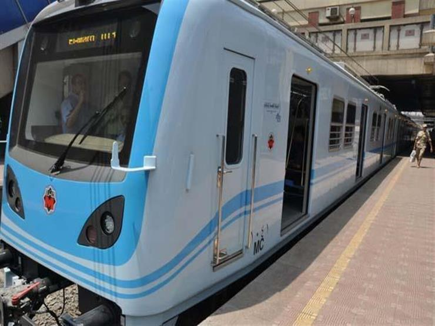
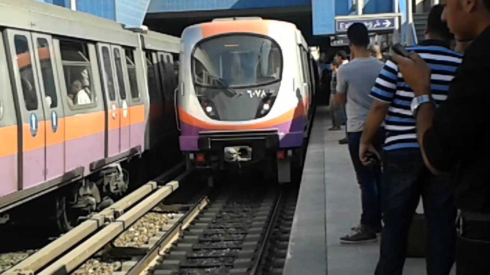
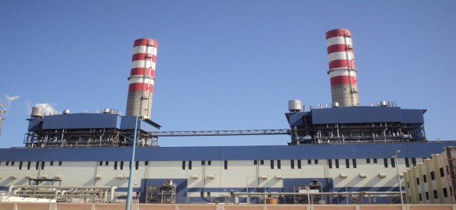
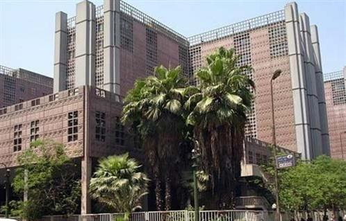
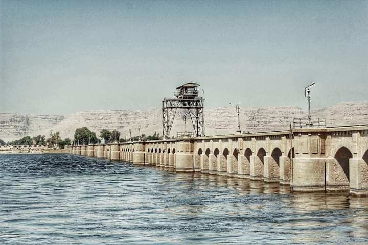
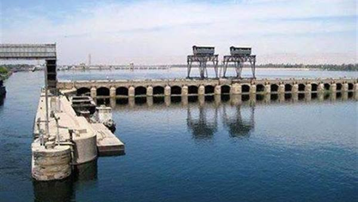

The first line of the Cairo subway
The first metro system in Egypt, Africa and the Middle East was established in 1987

The second line of the Cairo subway
The second line was established to alleviate the congestion problem that Greater Cairo suffers from

Abu Qir power station
One of the West Delta electricity production companies is located on Abu Qir Bay, east of Alexandria

Kasr Al Aini French Teaching Hospital
This hospital is considered one of the most modern hospitals in the field of diagnosis and treatment

Nag Hammadi reservoir project
A group of dams on the Nile River, north of the city of Nag Hammadi in Qena Governorate

Esna Barrage and power station project
It was built to provide water for irrigation and to generate electrical power